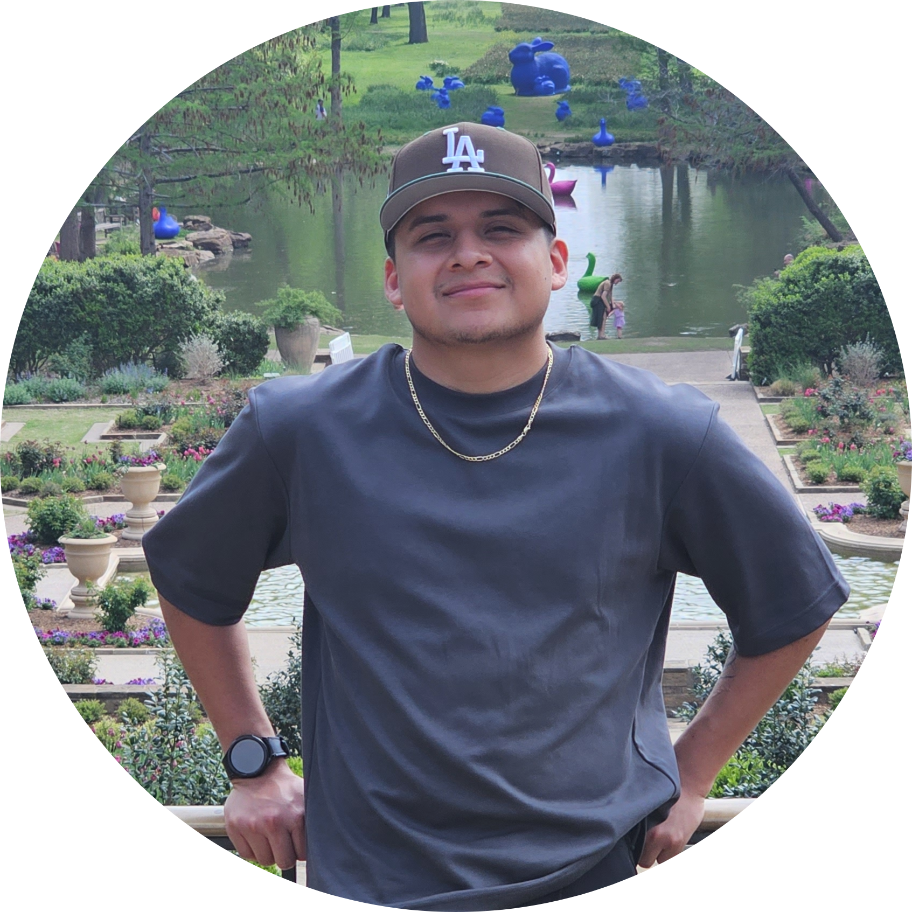

Welcome to my portfolio
Hello, I am Yens Castro.
I'm a senior-year Computer Science student at Arizona State University with hands-on experience in full-stack development, open-source contribution, and AI-assisted tooling. I enjoy turning complex problems into clean, functional solutions — from React frontends to Python backends. Here you'll find a selection of projects that reflect my skills, my curiosity, and my commitment to writing code that matters.
Get to know me
A little about me
About Me
I am studying at Arizona State University and exploring the creative side of technology. I enjoy learning new skills, solving problems, and working on projects that help me grow. I am currently working on various web development projects and AI based applications. I have experience in both frontend and backend development using modern frameworks and tools such as React, Node.js, and Python. I am also familiar with database management and cloud computing platforms like AWS and postgresql.
What I am learning
Skills
Here are a few tools and topics I am practicing right now.
- HTML
- CSS
- Python
- JavaScript
Selected work
Projects
A few projects that show what I have been learning and building.
-
PathReview: Open-Source Contribution
Contributed to an AI-powered portfolio-review platform with a FastAPI backend and React frontend. Fixed a data-privacy defect in the safety layer by improving phone-number redaction and wrote a regression test using pytest.
- FastAPI
- React
- pytest
-
Custom PC Builder Platform
Built a full-stack web app where users can create, read, update, and delete custom PC builds. Includes a dynamic price-calculator and compatibility validation with 20+ rules that block saves on errors and warn on conflicts.
- Full-stack
- CRUD
- Validation
-
Flashcard Learning Platform
Developed a full-stack educational platform with user authentication, personalized study sets, interactive flashcard modes (flip, progress tracking), and a community forum with search and filtering.
- Full-stack
- Authentication
- Search
Let us connect
Contact
Have a question or want to say hello? Send me a message.